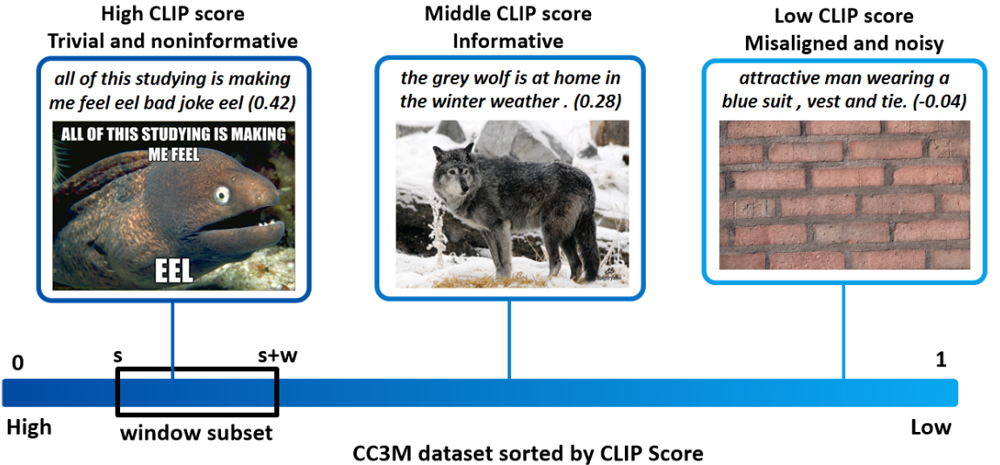
Abstract
Effective data valuation is essential for machine learning, especially for CLIP pretraining, where models are trained on massive and inherently noisy image-text datasets. Existing CLIP data selection methods often combine heuristic signals such as alignment, target similarity, and diversity, but lack a unified principle for estimating sample contribution. This can lead to inconsistent performance across data regimes and obscures how each sample contributes to downstream performance.
In this work, we propose InfCLIP, a principled influence-inspired approach for data selection in CLIP pretraining. InfCLIP estimates the contribution of each training sample to a target task by leveraging feature representations and temperature-rescaled softmax distributions, enabling efficient computation without retraining or access to model internals. This formulation provides a unified view of alignment, informativeness, uniqueness, and target relevance within a single framework. Empirically, InfCLIP consistently outperforms existing data selection methods across a wide range of benchmarks, including zero-shot evaluation on ImageNet and distribution-shifted datasets. We also show that Self-InfCLIP enables efficient training-set analysis, including noise detection and memorization-aware data assessment, without additional retraining.
Method
We measure the influence of a training pair \(i\) on a target sample \(t\) as the inner product of the gradients of their softmax matching scores \(s_i = p_{ii} + q_{ii}\). Approximating the Jacobian interactions from a Neural Tangent Kernel perspective turns this into a closed form over features only:
Here \(\bar g_i = g_i - \sum_k p_{ik} g_k\) and \(\bar f_i = f_i - \sum_k q_{ki} f_k\) are centered features. The score of a sample is \(I(i,\mathcal T)=\max_{t\in\mathcal T} I(i,t)\) over 1,000 ImageNet class prototypes. Because pretrained CLIP softmaxes are nearly one-hot, we rescale the temperature only for scoring (\(\tau_{\text{score}}=0.1\)), which keeps the centered features informative without changing the teacher.
- AlignmentSoftmax weights \(p_{ii}, q_{ii}\) multiply every term, so mismatched pairs are suppressed.
- Target relevanceIntra-modal similarities \(f_i^\top f_t\), \(g_i^\top g_t\) favor samples close to the target task.
- UniquenessCentered features \(\bar f_i, \bar g_i\) are large for distinctive samples and small for redundant ones.
A high InfCLIP score requires all three to be large at once. Scoring all of CC3M takes under a minute on a single GPU once teacher features are extracted.
Results
Subset selection on CC3M and CC12M
Zero-shot accuracy of CLIP (RN50) trained from scratch on selected subsets under a fixed training budget. Dashed line: full data.
CC3M
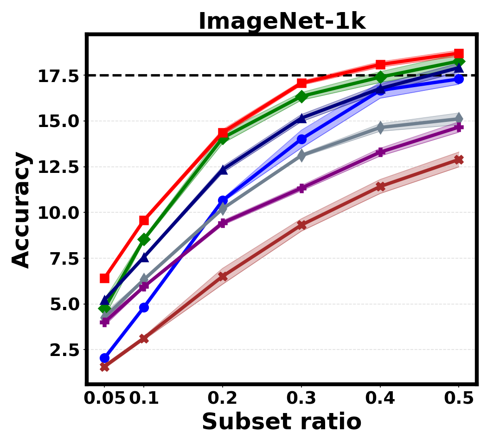
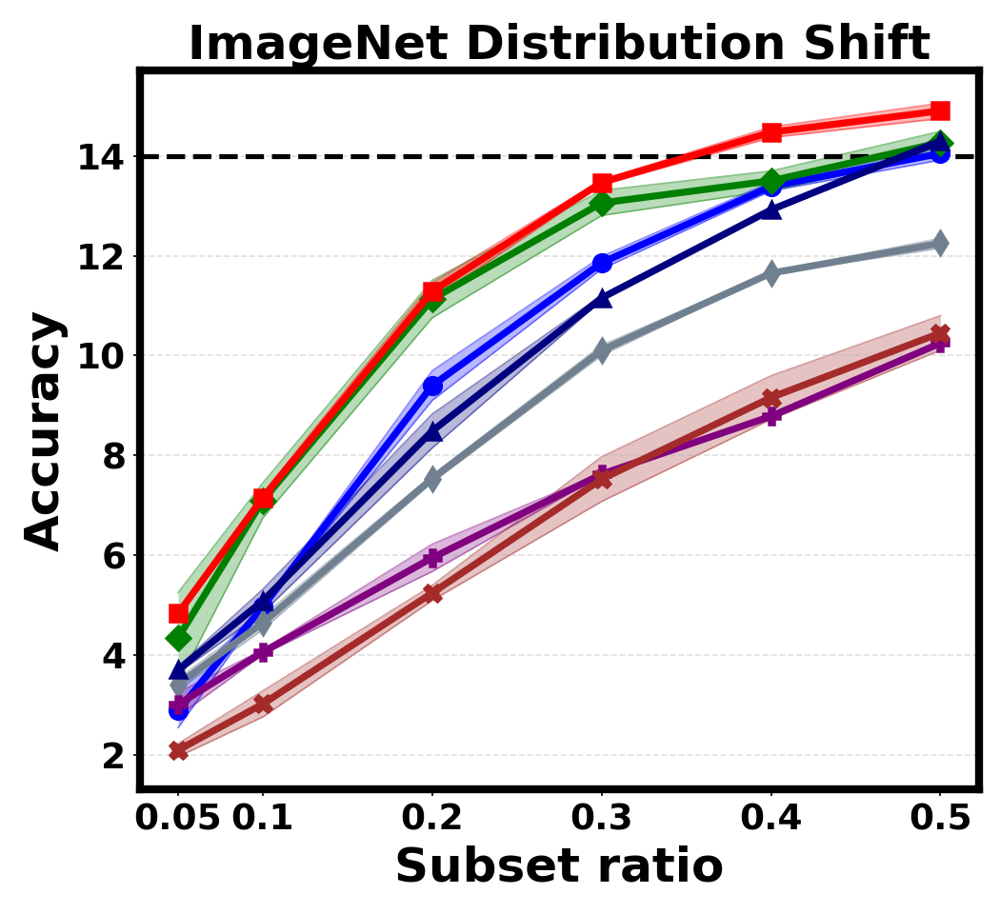
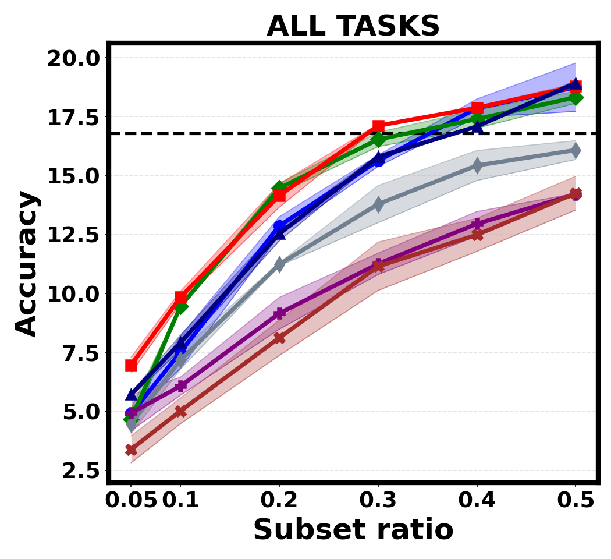
CC12M
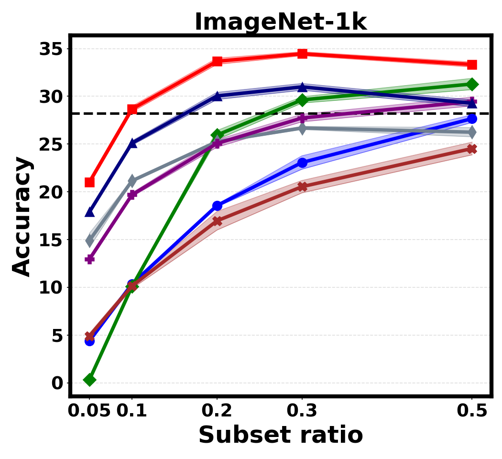
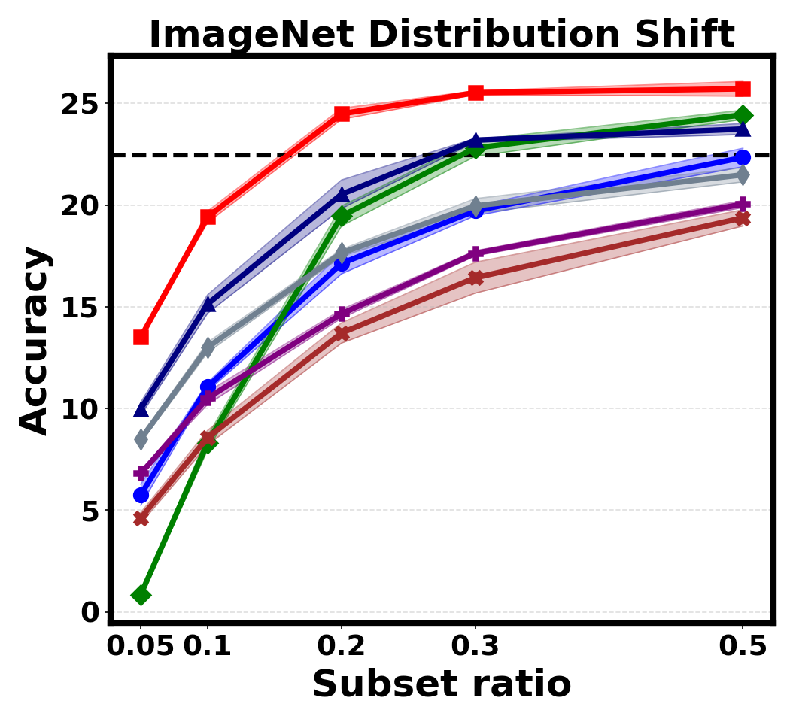
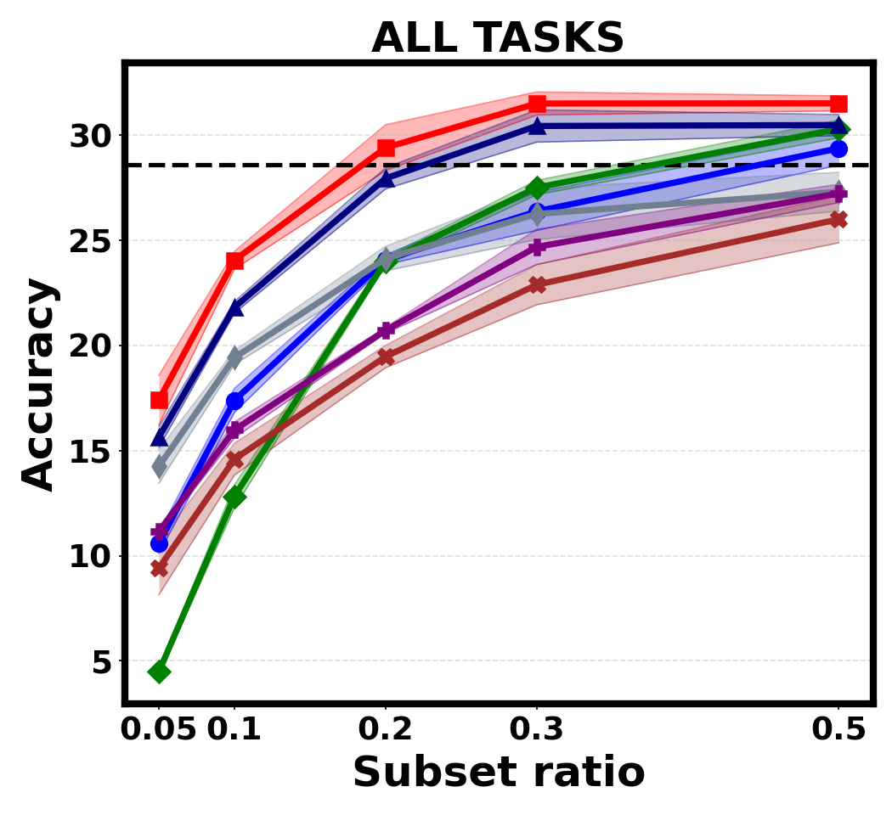
Window training: InfCLIP gives a monotonic ranking
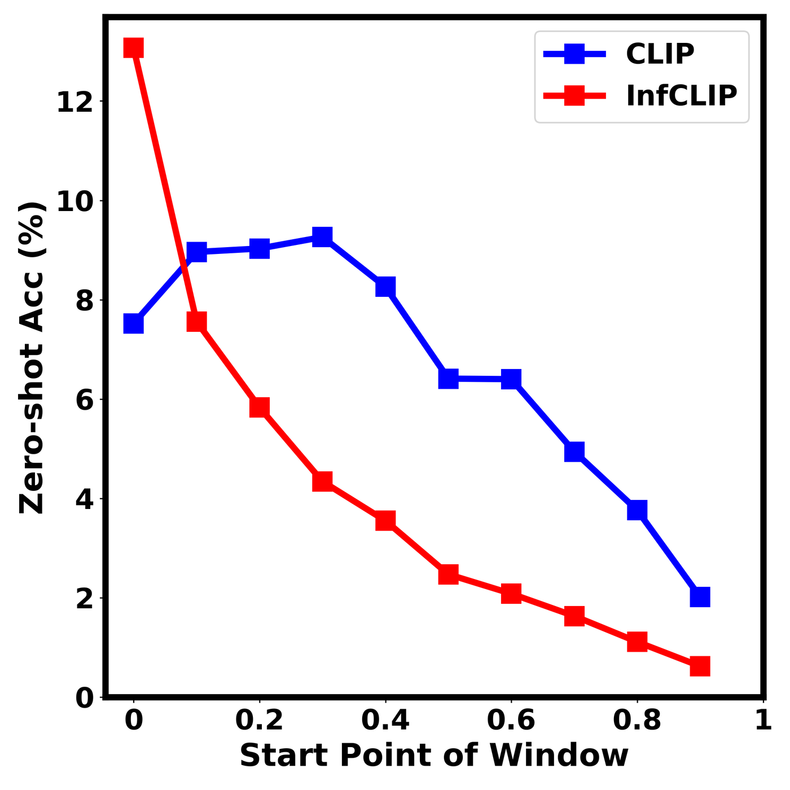
After sorting CC3M by a score, we train on contiguous 10% windows. With CLIP score the best window is in the middle, so the highest-scoring data is not the most useful. With InfCLIP, accuracy decreases monotonically from the top window, so the ranking itself reflects data value.
DataComp-small
| Subset | Eval | CLIP score | SCLIP+NormSim | InfCLIP | Full data |
|---|---|---|---|---|---|
| 5% | ImageNet-1K | 1.54 | 2.97 | 7.78 | 4.56 |
| 10% | ImageNet-1K | 3.70 | 5.73 | 10.82 | 4.56 |
| 20% | ImageNet-1K | 7.31 | 8.39 | 12.28 | 4.56 |
| 20% | All tasks | 17.57 | 17.71 | 21.06 | 14.63 |
Connection to classical influence
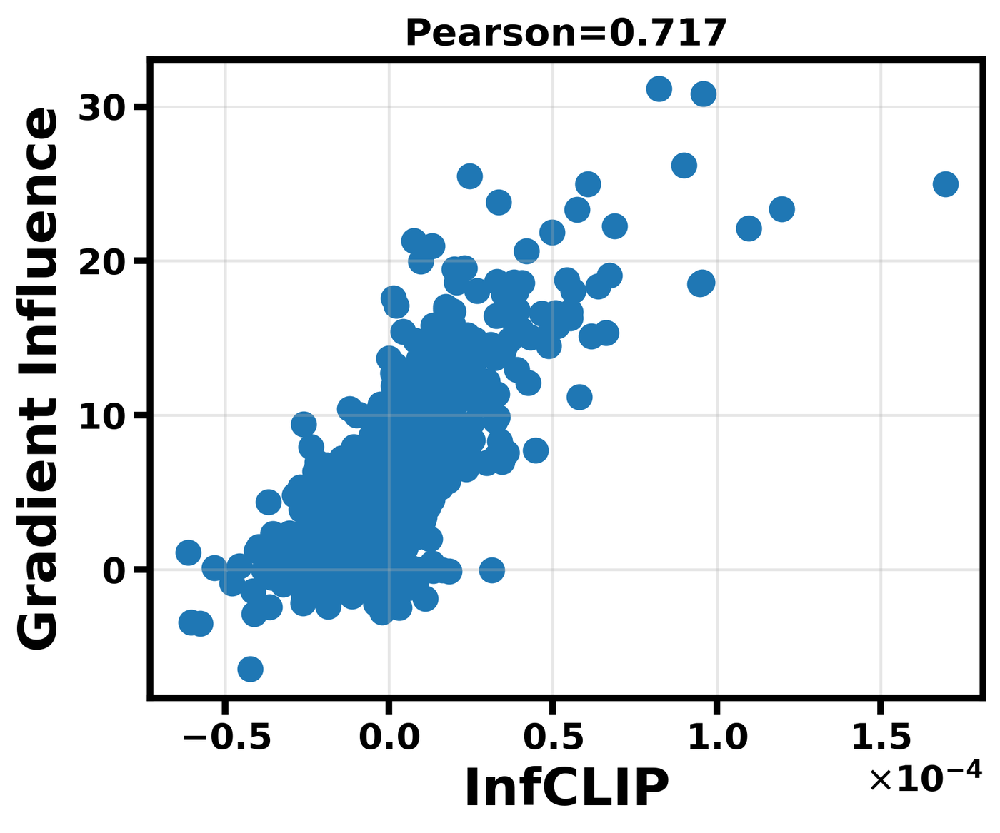
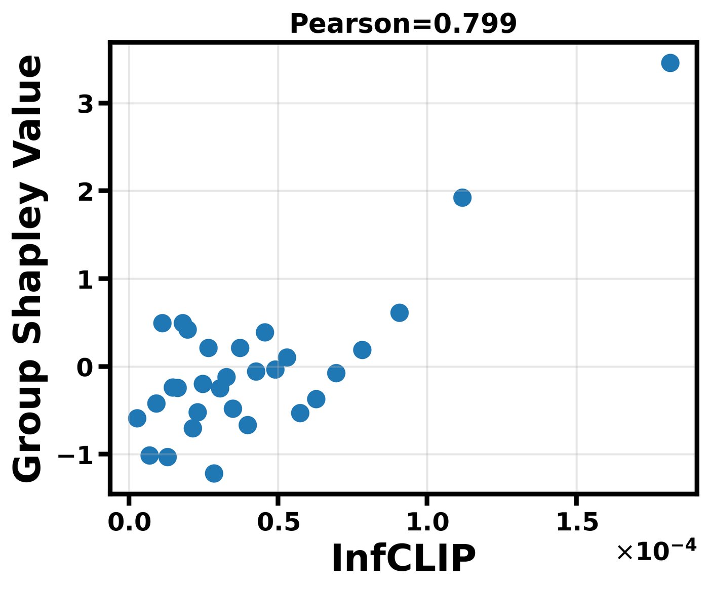
InfCLIP correlates strongly with TracIn and Group Shapley values, especially among high-scoring samples. Removing only the top 10% of CC3M by InfCLIP drops ImageNet zero-shot accuracy from 16.37% to 9.17%, versus 14.85% for CLIP score and 15.04% for random removal.
Self-InfCLIP for training-set analysis
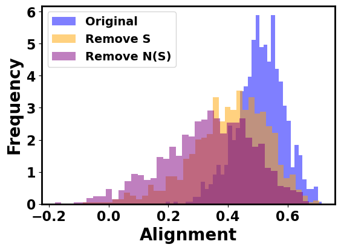
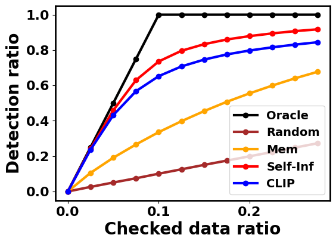
Using the training set itself as the target, Self-InfCLIP sums a sample's influence on its top-10 neighbors. It detects mismatched pairs better than CLIP score and the CLIPMem memorization score, and has a Spearman correlation of −0.60 with CLIPMem, all without training any extra model.
Use it
from calculate_score import calculate_inf_softmax_ntk
scores = calculate_inf_softmax_ntk(
{"image_outputs": train_img, "text_outputs": train_txt}, # teacher features, (N, D)
{"image_outputs": target_img, "text_outputs": target_txt}, # target prototypes, (M, D)
batch_size=1024, logit_scale=10, device="cuda")
subset = scores.argsort()[::-1][: int(0.3 * len(scores))] # keep top 30%Full instructions for feature extraction, scoring, and subset training are in the GitHub repository.
Citation
@inproceedings{ki2026infclip,
title = {InfCLIP: Unified Data Valuation for CLIP Pretraining via Influence-Inspired Scoring},
author = {Ki, Nohyun and Chung, Hye Won},
booktitle = {Advances in Neural Information Processing Systems},
year = {2026}
}